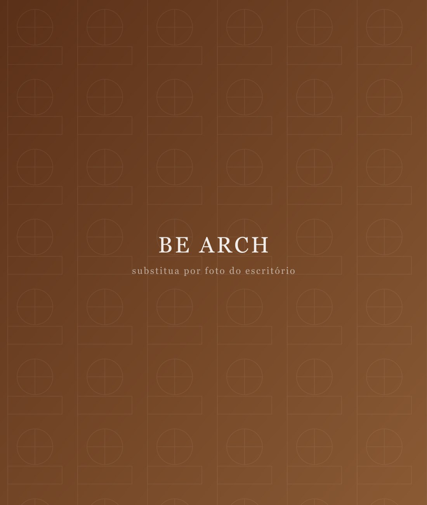

Arquitetônico
Planejamos o layout da sua casa de acordo com o seu terreno e insolação, unindo funcionalidade e identidade.
Arquitetura & Interiores
Projetos atemporais, pensados para a forma como você deseja viver e trabalhar.

O Be Arch
O BE ARCH nasce de uma essência que sempre esteve presente: projetar com metodologia, estrutura, amor e responsabilidade. Mais do que concretizar ambientes, traduzimos a forma como cada cliente deseja viver em espaços leves, humanos e atemporais.
Atuamos em todo o Brasil, com arquitetura e interiores para projetos residenciais e comerciais, do conceito à gestão da obra, cuidando de cada detalhe com sofisticação e propósito.
O que fazemos
Soluções completas em arquitetura e interiores , cada uma pode ser direcionada para projetos residenciais ou comerciais.
Planejamos o layout da sua casa de acordo com o seu terreno e insolação, unindo funcionalidade e identidade.
Projeto completo, da concepção arquitetônica aos interiores, nos mínimos detalhes, pensado exclusivamente para você.
Ambientes pensados nos mínimos detalhes: layout, marcenaria, iluminação, materiais e mobiliário.
Transformamos o que já existe em um espaço renovado, funcional e alinhado ao seu estilo de vida.
Um projeto de interiores completo à distância, com todo o cuidado do BE Arch onde você estiver.
Acompanhamos a execução para garantir que o projeto saia do papel exatamente como foi idealizado.
Por que o BE Arch
Cada projeto é único e nasce da sua história. Nada de fórmulas prontas , desenhamos ao redor de você.
Você acompanha cada etapa com transparência, do briefing à entrega, sem surpresas pelo caminho.
Materiais naturais e elegância que não passam de moda, criando ambientes acolhedores e duradouros.
Projeto e gestão sob o mesmo cuidado, garantindo fidelidade entre o que foi imaginado e o construído.
Onde atuamos
Atendemos projetos presenciais e online. Confira as regiões onde o BE Arch já está presente , e fale com a gente mesmo que a sua cidade não esteja na lista.
Portfólio
Uma seleção de trabalhos em arquitetura e interiores, residenciais e comerciais.
Avaliações do Google
★★★★★“Superou todas as nossas expectativas. Cada detalhe do projeto refletiu exatamente o que sonhávamos para a nossa casa.”
, Cliente BE Arch
★★★★★“Profissionalismo do início ao fim. A gestão da obra deu tranquilidade e o resultado ficou impecável.”
, Cliente BE Arch
★★★★★“Transformaram o nosso comercial em um espaço lindo e funcional. Recomendo de olhos fechados.”
, Cliente BE Arch
Vamos conversar
Conte pra gente sobre o seu espaço e a forma como você deseja viver. O primeiro passo é uma conversa.
Falar no WhatsAppSanta Catarina & Rio Grande do Sul · Presencial e online